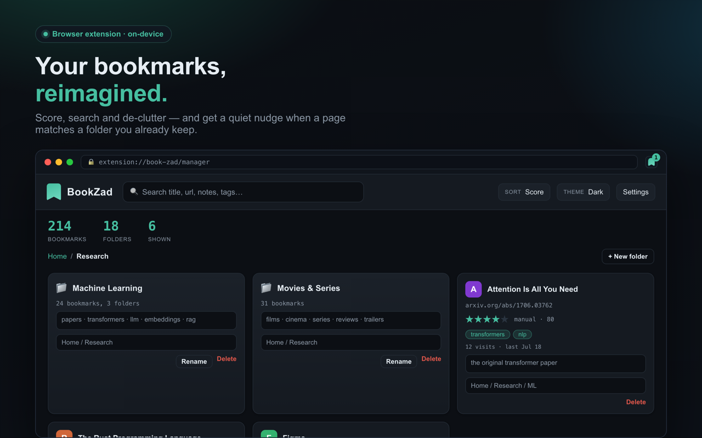
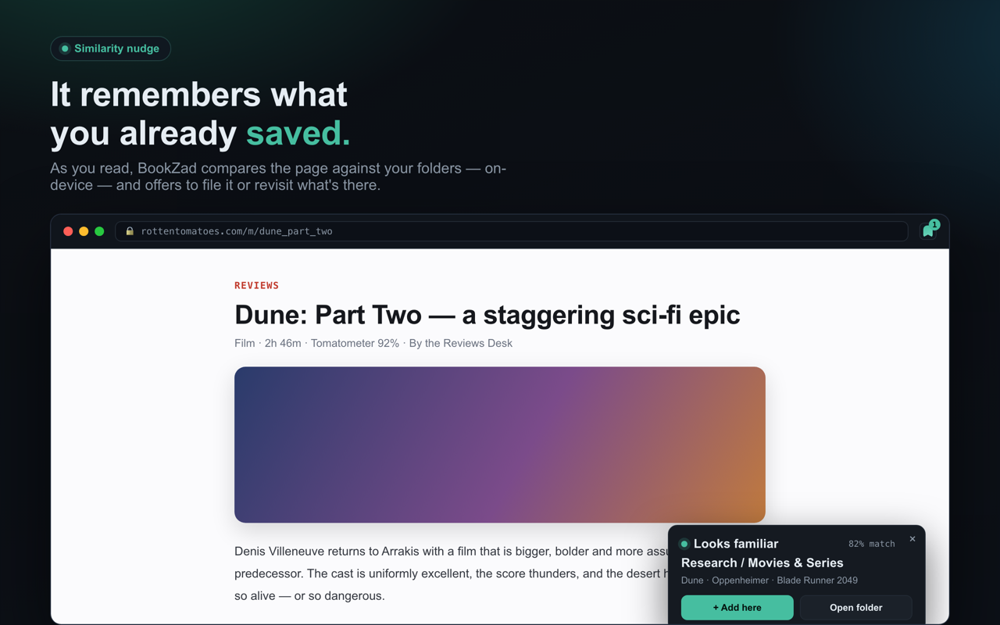
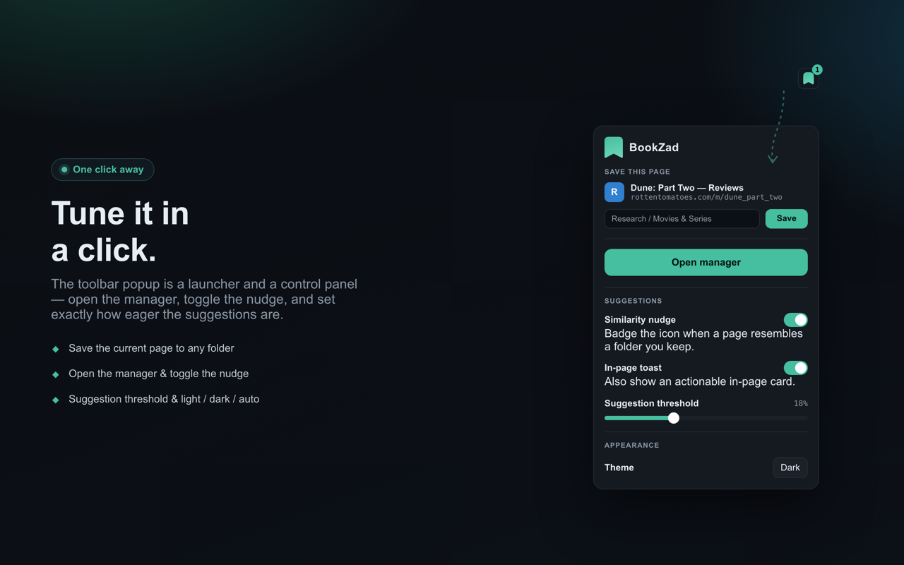

Bewerte, durchsuche und entrümple deine Lesezeichen — und bekomme einen leisen Hinweis, wenn die Seite, die du liest, zu einem deiner Ordner passt. Alles läuft auf deinem Gerät.

Baut auf deinen echten Lesezeichen auf — überall sonst bleiben sie nutzbar.
Finde jedes Lesezeichen sofort über Titel, URL, Notizen oder Schlagwörter — kein Wühlen in Ordnern mehr.
Navigiere mit Brotkrumen, lege Ordner an und benenne sie um, verschiebe ein Lesezeichen — oder einen ganzen Ordner — überallhin, und speichere die aktuelle Seite mit einem Klick.
Jedes Lesezeichen bekommt eine Bewertung aus deiner tatsächlichen Nutzung — Besuche, Aktualität, Verweildauer — die du selbst überschreiben kannst.
Beschrifte und verschlagworte jedes Lesezeichen. Beides ist durchsuchbar — und schärft die Vorschläge.
Duplikate, vergessene Lesezeichen und tote Links — übersichtlich aufgelistet und mit einem Klick entfernt, wobei die beste Kopie bleibt.
Beim Surfen vergleicht BookZad die Seite mit deinen Ordnern und schlägt vor, sie abzulegen — oder Gespeichertes wieder anzusehen. Jede Website ist mit einem Klick stummzuschalten; Suchmaschinen sind es von Haus aus.
Der Ähnlichkeitshinweis und das Bedienfeld mit einem Klick.


Alle drei Fassungen kommen in die Stores — jeder Link geht online, sobald er freigegeben ist.
Verfügbar auf English · Deutsch · Français · Italiano · Nederlands · Türkçe · فارسی
BookZad hat kein Konto und keinen Server. Die Ähnlichkeitsprüfung liest die Seite, auf der du bist, nur um sie — auf deinem Gerät — mit deinen Lesezeichen zu vergleichen. Nichts wird jemals übertragen, und du kannst jederzeit eine vollständige Sicherung deiner Lesezeichen, Notizen, Schlagwörter und Bewertungen exportieren.
Datenschutzerklärung lesen →